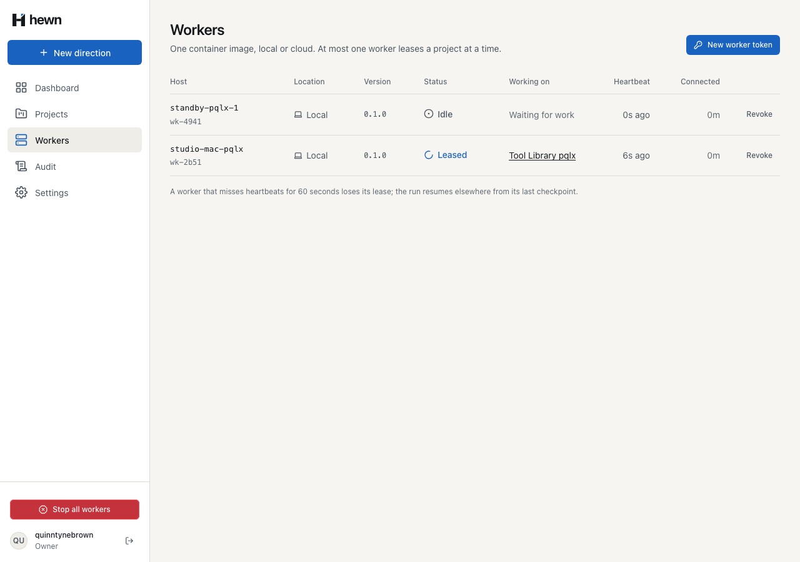
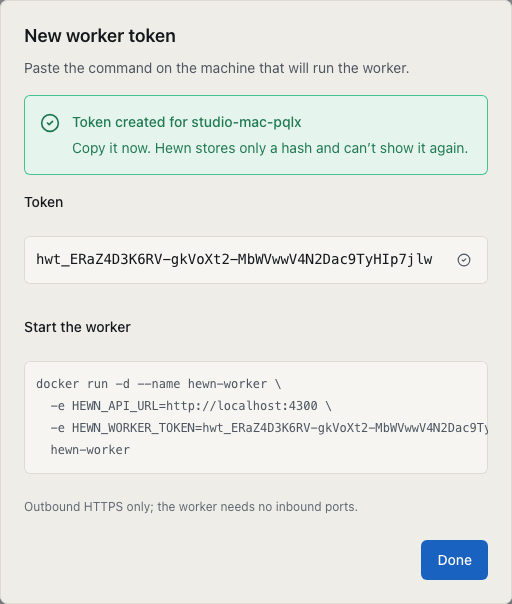
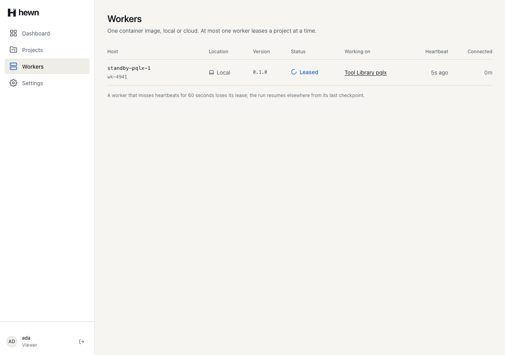
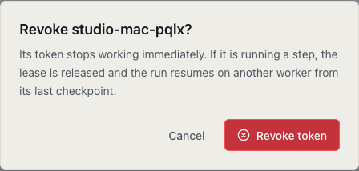
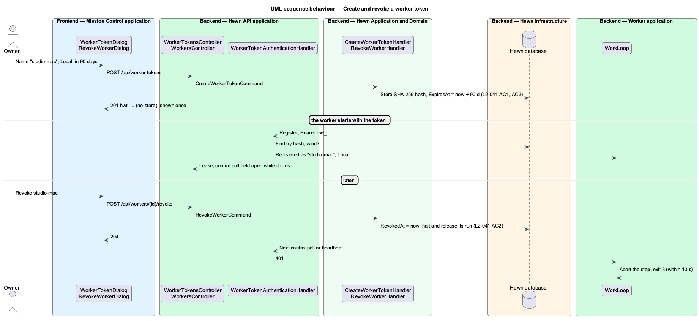
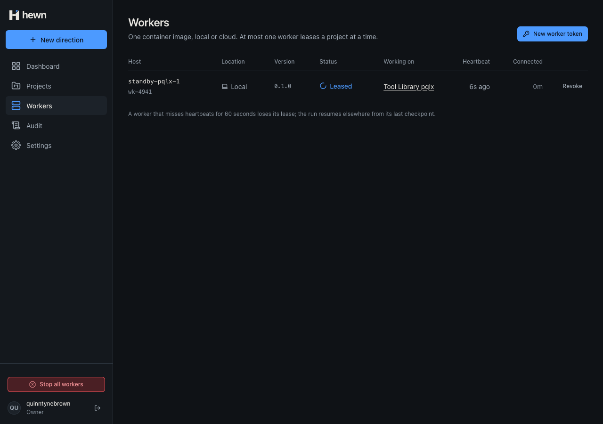
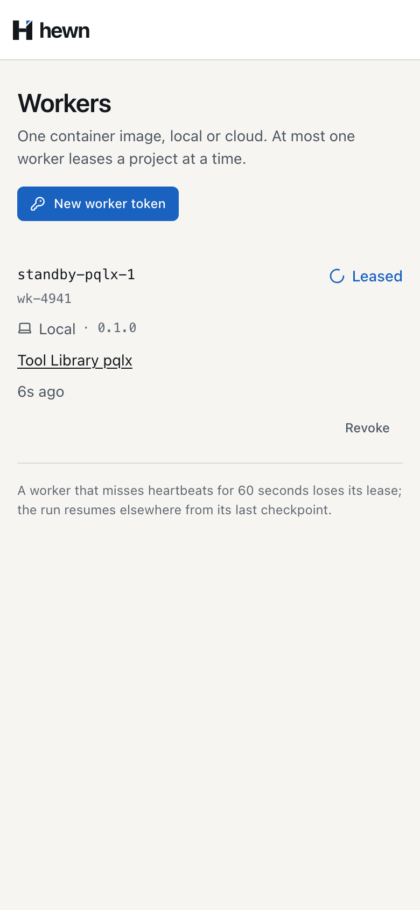

Shown once, stored as a hash, revoked in seconds.


public static class WorkerTokenHash
{
public const string Prefix = "hwt_";
public static string Of(string token) => Convert.ToHexStringLower(SHA256.HashData(Encoding.UTF8.GetBytes(token)));
/// <summary>32 random bytes, base64url, after the <c>hwt_</c> prefix that lets secret scanners spot it.</summary>
public static string NewToken() => Prefix + Convert.ToBase64String(RandomNumberGenerator.GetBytes(32))
.TrimEnd('=').Replace('+', '-').Replace('/', '_');
var token = WorkerTokenHash.NewToken();
var stored = new WorkerToken(name, location, WorkerTokenHash.Of(token), command.CreatedBy, clock.GetUtcNow(), command.ExpiresInDays);
db.WorkerTokens.Add(stored);
await db.SaveChangesAsync(cancellationToken);
return new CreatedWorkerTokenDto(stored.Id, stored.Name, stored.Location.ToString(), stored.ExpiresAt, token);
sqlite> select Id, Name, Hash from worker_tokens
...> where Name = 'studio-mac-pqlx';
wtk_64d34c839fab | studio-mac-pqlx
| 6c972230b547fcd2f7b3cdbb6b007731
0aed03d0c065745fb95cdba269f915ec
GET /api/workers contains the token? false
worker_tokens row contains it? false
var presented = header["Bearer ".Length..].Trim();
if (presented.StartsWith(WorkerTokenHash.Prefix, StringComparison.Ordinal))
{
// Looked up by hash: the token itself is never stored, compared or logged.
var hash = WorkerTokenHash.Of(presented);
var token = await db.WorkerTokens.AsNoTracking()
.Where(t => t.Hash == hash)
.Select(t => new { t.Id, t.RevokedAt, t.ExpiresAt })
.SingleOrDefaultAsync(Context.RequestAborted);
if (token is null || token.RevokedAt is not null || clock.GetUtcNow() >= token.ExpiresAt)
{
return AuthenticateResult.Fail("Invalid worker token.");
}
return Success(new Claim(TokenIdClaim, token.Id));
$ docker run -d --name studio-mac \
-e HEWN_API_URL=http://host.docker.internal:5300 \
-e HEWN_WORKER_TOKEN=hwt_… \
hewn-worker:dev
// An issued token names its worker and says where it runs (L2-041); the configured token leaves both to the worker.
var token = command.TokenId is null
? null
: await db.WorkerTokens.AsNoTracking().Where(t => t.Id == command.TokenId).Select(t => new { t.Name, t.Location }).SingleAsync(cancellationToken);
var worker = new Worker(
token?.Name ?? command.Name,
token?.Location ?? Enum.Parse<WorkerLocation>(command.Location, ignoreCase: true),
command.Host,
command.Version,
clock.GetUtcNow(),
command.TokenId);


var now = clock.GetUtcNow();
var token = await db.WorkerTokens.SingleAsync(t => t.Id == worker.TokenId, cancellationToken);
token.Revoke(command.RevokedBy, now);
var onToken = await db.Workers.Where(w => w.TokenId == token.Id && w.RevokedAt == null).ToListAsync(cancellationToken);
foreach (var revoked in onToken)
{
revoked.Revoke(now);
}
// Stored before any run is released, so no request on this token is accepted from here on.
await db.SaveChangesAsync(cancellationToken);
foreach (var run in await db.Runs.Where(r => runIds.Contains(r.Id) && r.Status == RunStatus.Leased).ToListAsync(cancellationToken))
{
var name = onToken.First(w => w.Id == run.WorkerId).Name;
run.Halt();
run.Release();
await RunLog.InfoAsync(db, events, run, $"Released: {name}'s token revoked by {command.RevokedBy}; resumes from step {run.CheckpointStep + 1}", now, cancellationToken);
}
await db.SaveChangesAsync(cancellationToken);
await events.PublishAsync(cancellationToken);
}
// Wakes the held control poll, which finds the run no longer this worker's; a fresh signal for the next holder.
foreach (var run in held)
{
signals.RequestStop(run.Id);
row gone from Workers 35 ms container exited, code 3 (293 ms) run leased by the standby 295 ms Checkpoint Lease lost The API refused this worker’s token (revoked or expired); stopping
} catch (error) {
if (lease.signal.aborted) return;
// The API took the run back (a revoked token, L2-041 AC2): stop now rather than at the next heartbeat.
if (error instanceof LeaseLostError || error instanceof TokenRefusedError) {
if (error instanceof TokenRefusedError) this.refused = true;
else this.log('Lease lost', { runId: run.runId });
lease.abort(error);
return;
}
if (loop.tokenRefused) process.exitCode = 3;

var revoked = await owner.PostAsync($"/api/workers/{worker.WorkerId}/revoke", new { });
Assert.Equal(HttpStatusCode.NoContent, revoked.StatusCode);
// The held control poll ends: the run is no longer this worker's.
Assert.Equal(HttpStatusCode.Conflict, (await control).StatusCode);
Assert.True(clock.Elapsed < TimeSpan.FromSeconds(10), $"disconnected after {clock.Elapsed}");
// Every further call is refused.
Assert.Equal(HttpStatusCode.Unauthorized, (await worker.HeartbeatAsync(run)).StatusCode);
// The lease is released: another worker resumes the run after its checkpoint.
var other = await _factory.RegisterWorkerAsync("hewn-cloud-eus-01");
var resumed = await other.LeaseAsync();
Assert.NotNull(resumed);
void new WorkLoop({ api, executor: slowSteps(3, finished), registration, log: (m) => logs.push(m) })
.run(stop.signal)
.then(() => (ended = true));
await vi.advanceTimersByTimeAsync(6_000);
api.revoke();
await vi.advanceTimersByTimeAsync(100);
expect(finished).toEqual(['s3.1']);
expect(logs).toContain('Lease lost');
await vi.advanceTimersByTimeAsync(10_000);
expect(logs).toContain('The API refused this worker’s token (revoked or expired); stopping');
await workers.revoke(name).click();
await expect(workers.revokeDialog).toContainText(`Revoke ${name}?`);
const revoked = Date.now();
await workers.revokeConfirm.click();
await expect(workers.revokeDialog).toBeHidden();
await expect(workers.row(name)).toHaveCount(0, { timeout: 10_000 });
await expect.poll(() => exitCode, { timeout: 10_000 - (Date.now() - revoked) }).toBe(3);
await expect(workers.details(`${standby}-1`).workingOn).toHaveText(direction, { timeout: 30_000 });

